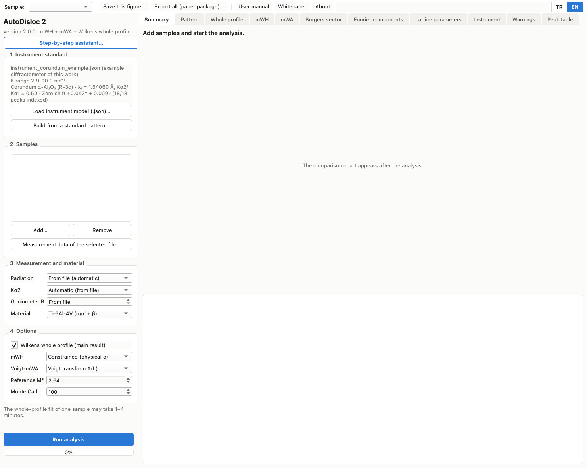
AutoDisloc 2 calculates the dislocation density ρ, the Burgers-vector population (fractions of ⟨a⟩, ⟨c⟩ and ⟨c+a⟩ dislocations), the dislocation arrangement parameter M* and the crystallite size of hcp α/α′ titanium alloys (e.g. Ti-6Al-4V, CP-Ti) from laboratory X-ray diffraction (XRD) patterns. It reads the data of different diffractometers (Bruker, PANalytical, any two-column file) and works with any X-ray tube and any line standard. It needs two kinds of measurement:
The results are shown as charts and tables in the program and can be exported as publication-ready figures (PNG/TIFF 600 dpi, PDF, SVG), an Excel report and a LaTeX table. The mathematics is explained in the whitepaper; this manual explains how to use the program.
There are three ways to run AutoDisloc. The ready-made applications need nothing else; running from source needs Python.
| Way | macOS | Windows | Requirement |
|---|---|---|---|
| Ready-made application | AutoDisloc2_macOS.zip | AutoDisloc2_Windows.zip | none |
| From source (double-click) | AutoDisloc2_Mac.command | AutoDisloc2_Windows.bat | Python ≥ 3.9 |
| Command line / Python library | python -m autodisloc … | python -m autodisloc … | Python ≥ 3.9 |
AutoDisloc2_macOS.zip from the Releases page of the repository (or take it from the dist/ folder).AutoDisloc2.app appears. Drag it into Applications.If macOS still refuses (for example on a managed computer), the quarantine flag can be removed in Terminal:
xattr -dr com.apple.quarantine /Applications/AutoDisloc2.app
AutoDisloc2_Windows.zip from the Releases page and extract it (right-click › Extract All).AutoDisloc2 folder and double-click AutoDisloc2.exe. Keep the other files in the folder; the program needs them.AutoDisloc2.exe › Send to › Desktop (create shortcut).The Windows application can also be built on a Windows computer with packaging\build_windows.bat (it installs the requirements and PyInstaller and writes dist\AutoDisloc2\AutoDisloc2.exe). On GitHub, every published release builds both applications automatically.
AutoDisloc2_Mac.command (macOS) or AutoDisloc2_Windows.bat (Windows). The first start installs the missing packages once.Or in a terminal in the repository folder:
python -m pip install -r requirements.txt python AutoDisloc2.py
| Item | Recommendation |
|---|---|
| Geometry, radiation | Bragg–Brentano; Cu Kα (Kα1+Kα2) with Ni β filter or monochromator. Co, Fe, Cr, Mo or Ag Kα also work (Section 5.5). |
| Range | at least 2θ = 30–85° (all eight α reflections 10.0 … 20.1); 20–90° is typical |
| Step, time | 0.01–0.02° step; peak maxima of at least several thousand counts |
| Data processing | none: no Kα2 stripping, no smoothing, no background subtraction |
| Line standard | same slits, step and time as the samples, ideally on the same day; LaB6 (NIST SRM 660c) is best, Si (SRM 640f), CeO2 or corundum are acceptable (Table 6) |
| Sample | flat polished surface; texture is reported by the program (Harris index) |
| Format | Extension | Read automatically |
|---|---|---|
| Bruker DIFFRAC plus RAW 1.01 | .raw | λ₁, λ₂, Kα2/Kα1 (0 = stripped), goniometer radius |
| Bruker UXD (text) | .uxd | λ₁, λ₂, Kα2/Kα1 (_WL1, _WL2, _WLRATIO) |
| PANalytical XRDML | .xrdml | λ₁, λ₂, Kα2/Kα1, goniometer radius, anode |
| two-column text (2θ, counts) | .xy .dat .txt .csv | optional header lines # WL1 = 1.5406, # WL2 = …, # WLRATIO = 0.5, # RADIUS = 250 or # ANODE = Cu; otherwise Cu Kα, 0.5 and 250 mm are assumed and marked as such |
What a file does not contain is never guessed silently: it is listed as assumed in the assistant, in Measurement data of the selected file… and in the Excel report, and a missing wavelength produces a warning; if the peaks fit another anode much better, that anode is suggested. Every value can be corrected by hand (Section 5.5). Other formats (e.g. Bruker DIFFRAC.SUITE RAW version 4, Rigaku) can be exported from the instrument software as XRDML, UXD or two-column text with the header lines above.
Fig. 1 shows the window after an analysis of the two example patterns supplied with the program (examples/). The numbered parts are explained in Table 4.
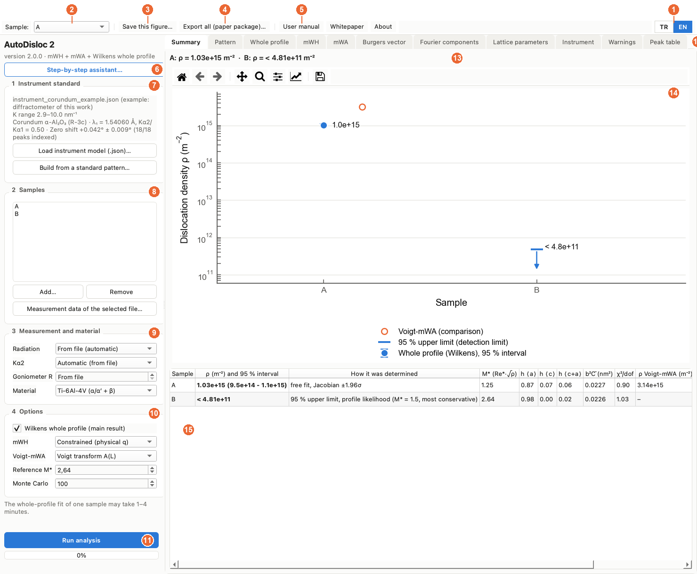
| Part | Function | |
|---|---|---|
| 1 | Language | Switches between Turkish and English; results and warnings are re-shown in the new language. |
| 2 | Sample | Selects which sample the tabs show. |
| 3 | Save this figure… | Saves the figure of the open tab (Section 7.1). |
| 4 | Export all (paper package)… | Writes all figures, the Excel report and the tables (Section 7.2). |
| 5 | User manual, Whitepaper, About | Opens this manual, the mathematical description, and the version and licence information. |
| 6 | Step-by-step assistant… | Optional assistant that asks for all data in order (Section 5.2). |
| 7 | 1 Instrument standard | Instrument model in use; load or build one (Section 5.3). |
| 8 | 2 Samples | List of patterns to analyse (Section 5.4). |
| 9 | 3 Measurement and material | Radiation, Kα2, goniometer radius, alloy (Section 5.5). |
| 10 | 4 Options | Analysis options (Section 5.6). The panel scrolls when the window is small. |
| 11 | Run analysis | Starts the analysis; the bar below shows the progress. |
| 12 | Tabs | Results of the selected sample (Section 6). |
| 13 | Headline | The main result ρ of every sample. |
| 14 | Comparison chart | ρ of all samples with 95 % intervals. |
| 15 | Summary table | Main numbers of every sample (Table 10). |
Every chart has the matplotlib toolbar above it: home resets the view, the arrows step through views, the cross pans, the magnifier zooms into a rectangle, and the disk saves the figure as shown on screen. For publication-quality files use Save this figure… instead.
Press TR or EN at the right of the toolbar. The window is rebuilt in the chosen language; loaded samples, options and results are kept. Exported files (folder names, Excel sheets, figure labels) use the language that is active when you export.
The assistant asks for everything an analysis needs, one page at a time, and shows on every page what the program has read from the files by itself. It is opened with Step-by-step assistant… at the top of the left panel. When you press Run analysis, the program also offers it (Open the assistant / Run directly); tick Do not ask again to switch the question off (it can be switched on again on the first page of the assistant). Using it is never required: every setting is also in the left panel.
| Page | What you do |
|---|---|
| 1 · Data and measurement | Add the sample files. The table shows format, λ₁, Kα2/Kα1 and goniometer radius of every file with their source (from file, assumed in red, or user). Correct radiation, Kα2 or radius only if they are missing or wrong (Fig. 2). |
| 2 · Material | Choose the alloy preset or enter nominal lattice parameters (Section 5.5). |
| 3 · Instrumental broadening | Keep the current instrument model, load a saved one, or build a new one from a standard measurement with the standard material of your choice; press Fit the standard and, if you like, Save model… (Fig. 3, Section 5.3). A wavelength that differs from the samples is shown in red. |
| 4 · Options | As in Table 9. |
| 5 · Summary | All settings at a glance; Run analysis applies them to the main window and starts the calculation. |
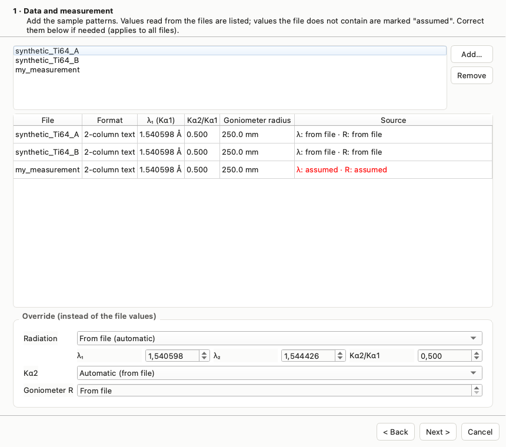
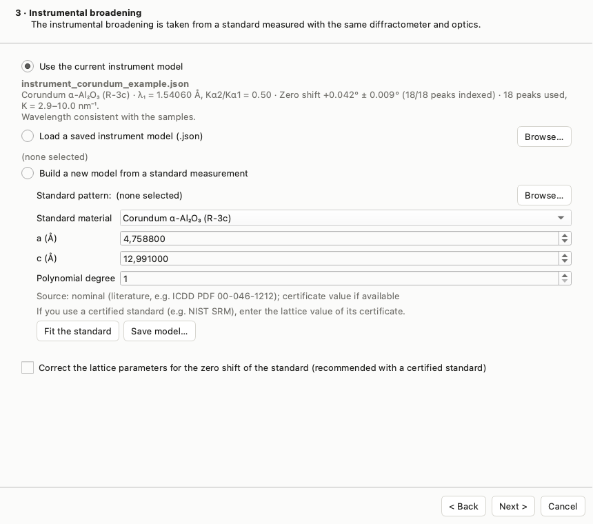
The instrument model describes the peak widths that the diffractometer itself produces. At the first start the example model of the program's own diffractometer is loaded (label example). For your own instrument build your own model:
.json file when asked. The Instrument tab shows the result (Fig. 4).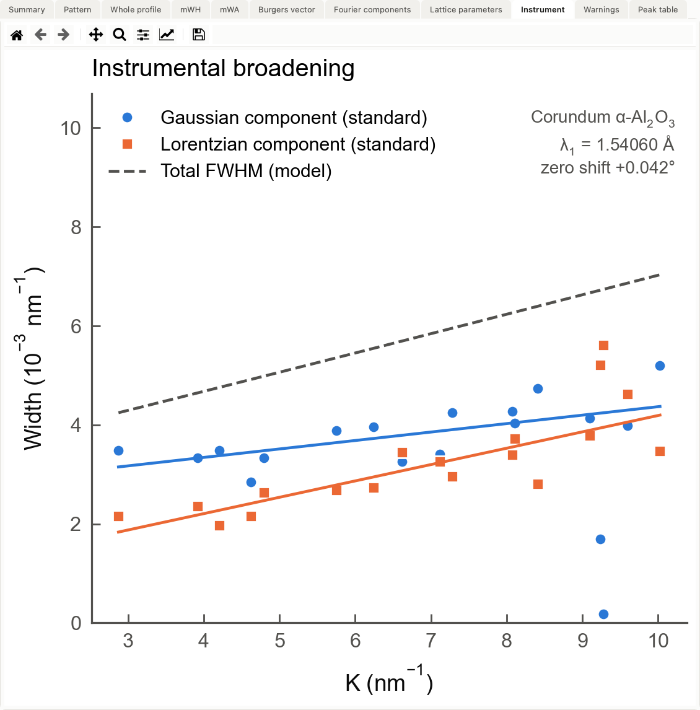
| Standard | Space group | Default lattice (Å) | Source of the default |
|---|---|---|---|
| LaB₆ | Pm-3m | a = 4.156826 | NIST SRM 660c, certified at 22.5 °C |
| Si | Fd-3m | a = 5.431144 | NIST SRM 640f, certified at 22.5 °C |
| CeO₂ | Fm-3m | a = 5.4111 | nominal (SRM 674a information value 5.411102) |
| Corundum α-Al₂O₃ | R-3c | a = 4.7588, c = 12.9910 | nominal literature value; use the certificate of your plate or powder |
| other / unknown | – | – | every peak found is used; no indexing, no zero shift |
Indexing has three uses. Peaks that are not reflections of the standard (impurities, Kβ or tungsten lines) are left out of the width model. If only a few peaks can be indexed, the program warns that the standard material, its lattice parameter or the radiation is probably wrong. Finally, the difference between observed and calculated positions gives the zero shift of the goniometer and the specimen displacement of the standard. The Instrument tab and the instrument label show them. Applying the zero shift to the lattice parameters of the samples is optional (assistant page 3, command-line option --zero). It is recommended only with a standard of certified lattice parameter: with a nominal lattice, zero shift and displacement cannot be separated reliably.
The group 3 Measurement and material of the left panel holds what depends on the instrument and the alloy. The defaults (From file) are right for RAW, UXD and XRDML files.
| Setting | Default | Meaning |
|---|---|---|
| Radiation | From file (automatic) | Cu, Co, Fe, Cr, Mo or Ag Kα (tabulated wavelengths) or Custom… (λ₁, λ₂, Kα2/Kα1). Needed for two-column files without header and for files with a wrong entry. |
| Kα2 | Automatic (from file) | Present for raw data, Stripped for data exported after Kα2 stripping. |
| Goniometer R | From file | Radius of the goniometer (e.g. 240 mm PANalytical, 250 mm Bruker D8). Affects only the specimen displacement in µm, not ρ. A radius different from that of the standard means another diffractometer and is reported. |
| Material | Ti-6Al-4V | Alloy preset (Table 8) or Custom… with α a, c, β a, β phase. |
| Preset | α a, c (Å) | β a (Å) | β phase |
|---|---|---|---|
| Ti-6Al-4V (α/α′ + β) | 2.925, 4.670 | 3.205 | modelled when present |
| CP-Ti, grade 1–4 (α) | 2.9505, 4.6826 | – | not modelled |
| custom α-Ti alloy | user | user | automatic / always / none |
By default the nominal lattice is adjusted to the measured pattern (strongest maxima matched to the α reflections) when it is clearly off, i.e. when it would misplace a reflection by more than 0.35°; any α-Ti alloy, any wavelength and a goniometer offset are then handled even with the “wrong” preset, while results obtained with the right preset do not change. The contrast factors, elastic constants and Burgers vectors of the analysis are those of hcp α/α′ titanium; the program is therefore not meant for other hcp metals (Zr, Mg, …). Measurement data of the selected file… in the sample group shows what was read from a file and what was assumed.
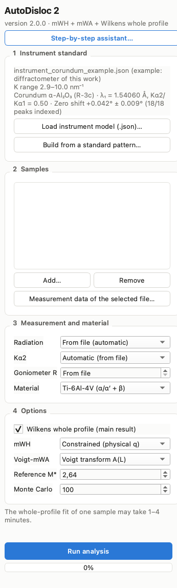
| Option | Default | Meaning |
|---|---|---|
| Wilkens whole profile | on | Main result. Switch off only for a fast preview (mWH and mWA only). |
| mWH | Constrained (physical q) | Free q1, q2 fits q1 and q2 without the constraint, for comparison. |
| Voigt-mWA | Voigt transform A(L) | Comparison method only. Muiruri 2020 Eq. 13 / HajyAkbary 2015 Eq. 23 reproduces the published formula of these papers. |
| Reference M* | 2.64 | Used only when ρ and M* cannot be determined together (weak broadening); the interval then covers the band 1.5–4.0. The default 2.64 is only the geometric mean of the free-fit M* (2.17 and 3.21) of two well-conditioned samples measured during the development of the program with the example instrument model; it is not a universal constant. ρ depends on this assumption (a larger M* gives a smaller ρ): set a value appropriate for your material and instrument, e.g. the free-fit M* of your own well-conditioned samples. M* in the program's convention (Section 6.2). |
| Monte Carlo | 100 | Number of draws for the Voigt-mWA uncertainty; 0 makes the analysis faster. |
Press Run analysis. The bar shows which sample is being processed. The whole-profile fit takes about 1–4 minutes per sample; samples at the detection limit take longer because the program scans the profile likelihood for an upper limit. The window stays usable during the analysis. When it is finished the Summary tab opens.
The Sample box in the toolbar selects which sample the tabs show. The headline and the summary tab show all samples together.
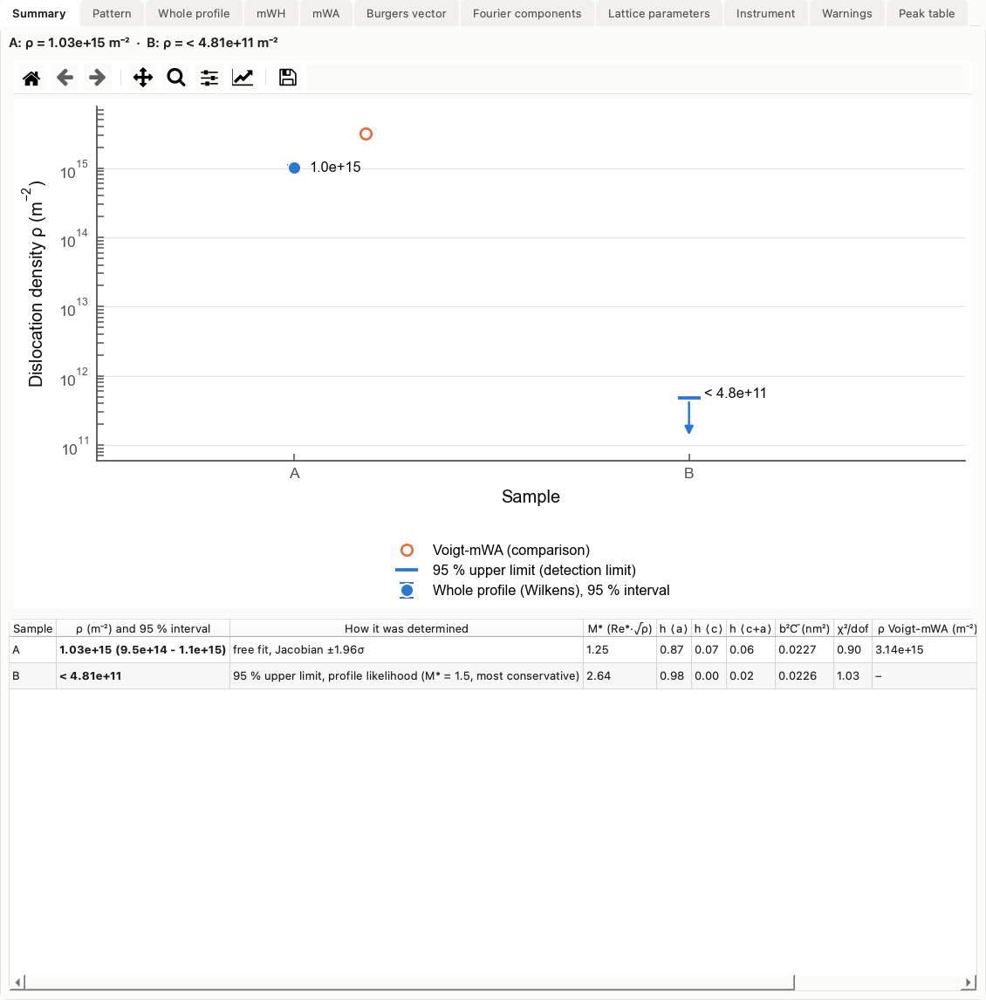
| Column | Meaning |
|---|---|
| ρ (m⁻²) and 95 % interval | Main result. “< x” means that the dislocation broadening is below the detection limit; x is the 95 % upper limit. |
| How it was determined | free fit, Jacobian: ρ and M* fitted freely (most reliable); M* fixed: weak broadening, the interval contains the M* band; upper limit: detection limit. |
| M* | Dislocation arrangement parameter M* = Re*·√ρ in the program's convention (small: strongly screened, e.g. dipoles; large: weakly correlated dislocations). Divide by 2.568 to compare with CMWP values (Section 6.2). |
| h ⟨a⟩, h ⟨c⟩, h ⟨c+a⟩ | Fractions of the Burgers-vector types (sum 1). |
| b²C̄ (nm²) | Average contrast factor × b²; ρ is inversely proportional to it. |
| χ²/dof | Goodness of the whole-profile fit; ≈1 is ideal, above 3 the model misses something (Section 6.6). |
| Voigt-mWA ρ | Comparison value of the classical method; not for reporting. |
| q₁, q₂, D | Contrast parameters and size from the modified Williamson–Hall analysis. |
| α a, α c, α c/a, β a | Lattice parameters of the phases (Å), Section 6.5. |
AutoDisloc evaluates the Wilkens function at η = L/Re*, where Re* = Re/2.877 and Re is the cut-off radius of the logarithmic mWA form ln(Re/L); it reports Re* and M* = Re*·√ρ. MWP-fit and CMWP use η = ½·e−1/4·L/Re* (Ribárik, Ungár & Gubicza 2001, J. Appl. Cryst. 34, 669, Eq. 4) and report M* = Re*·√ρ with their Re*. For the same physical state M*(CMWP) = M*(AutoDisloc)/2.568 (2.568 = 2·e1/4; the same factor applies to Re*). ρ is the same in both conventions. The whitepaper (section on the Wilkens function) gives the derivation.
When ρ and M* cannot be fitted together (weak broadening), M* is fixed at the Reference M* of the options and the interval covers the band 1.5–4.0. The default 2.64 is only the geometric mean of the free-fit M* (2.17 and 3.21) of two well-conditioned samples measured during the development of the program with the example instrument model. It is not a universal constant: ρ then depends on the assumed M* (a larger M* gives a smaller ρ), so set a value appropriate for your material and instrument, for example the free-fit M* of your own well-conditioned samples.
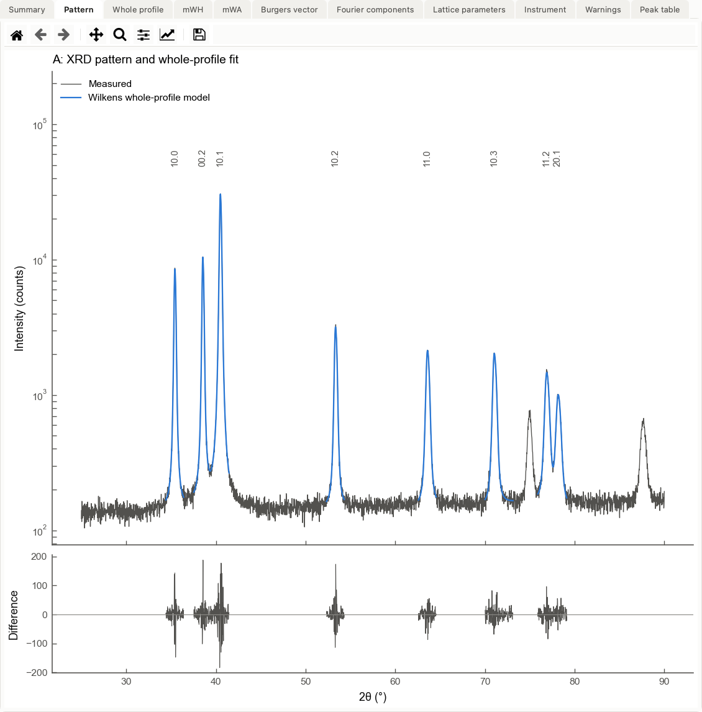
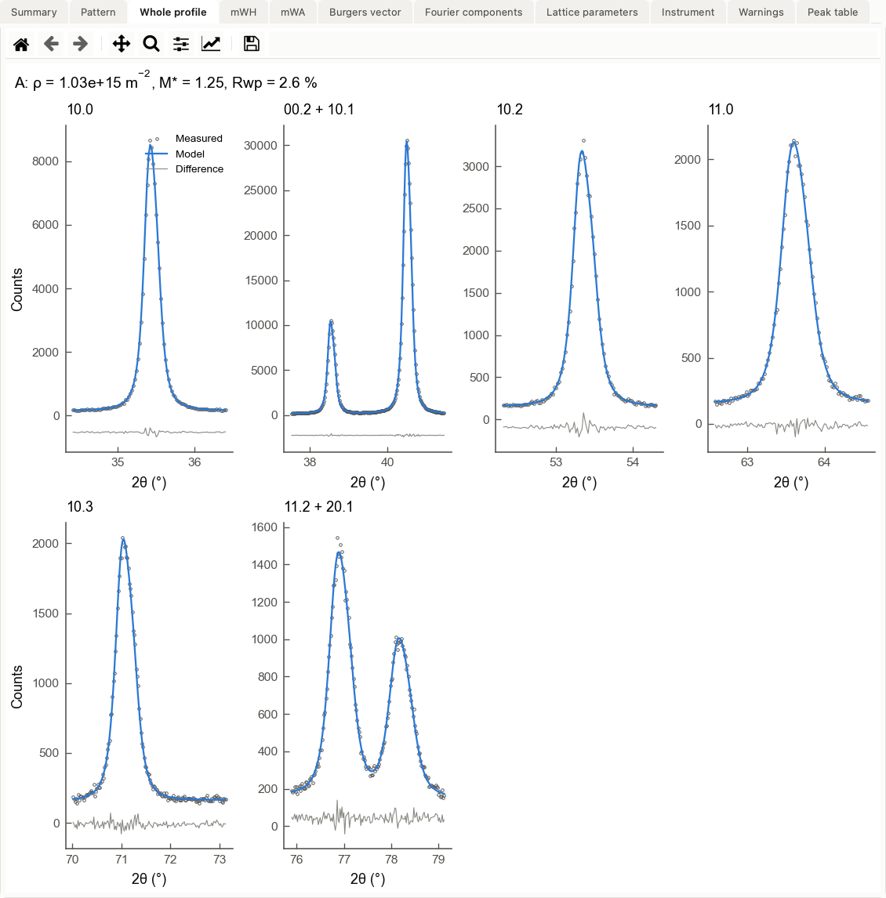
Check this tab for every sample: systematic wave-like residuals at the peak flanks or a missing shoulder indicate a second phase, a wrong Kα2 setting or a peak that the model does not know.
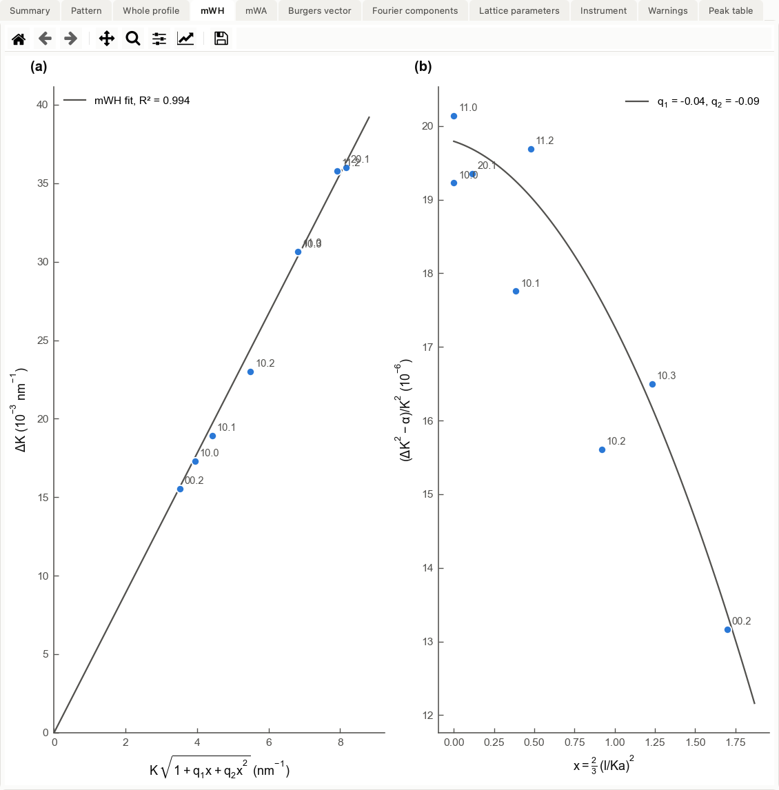
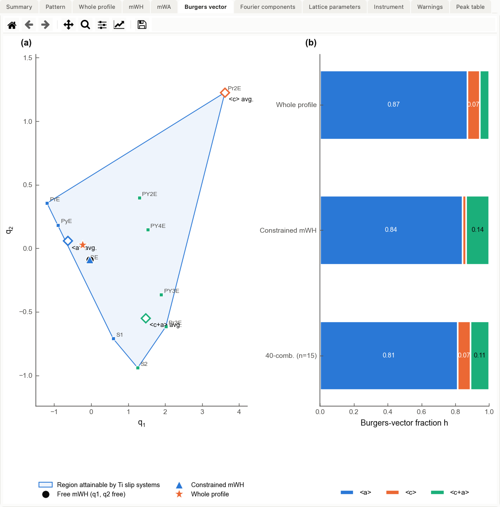
The mWA tab shows the classical Voigt-based Warren–Averbach plots and the Fourier components tab the size and dislocation Fourier factors of the highest-K reflection; both serve for comparison and for teaching.
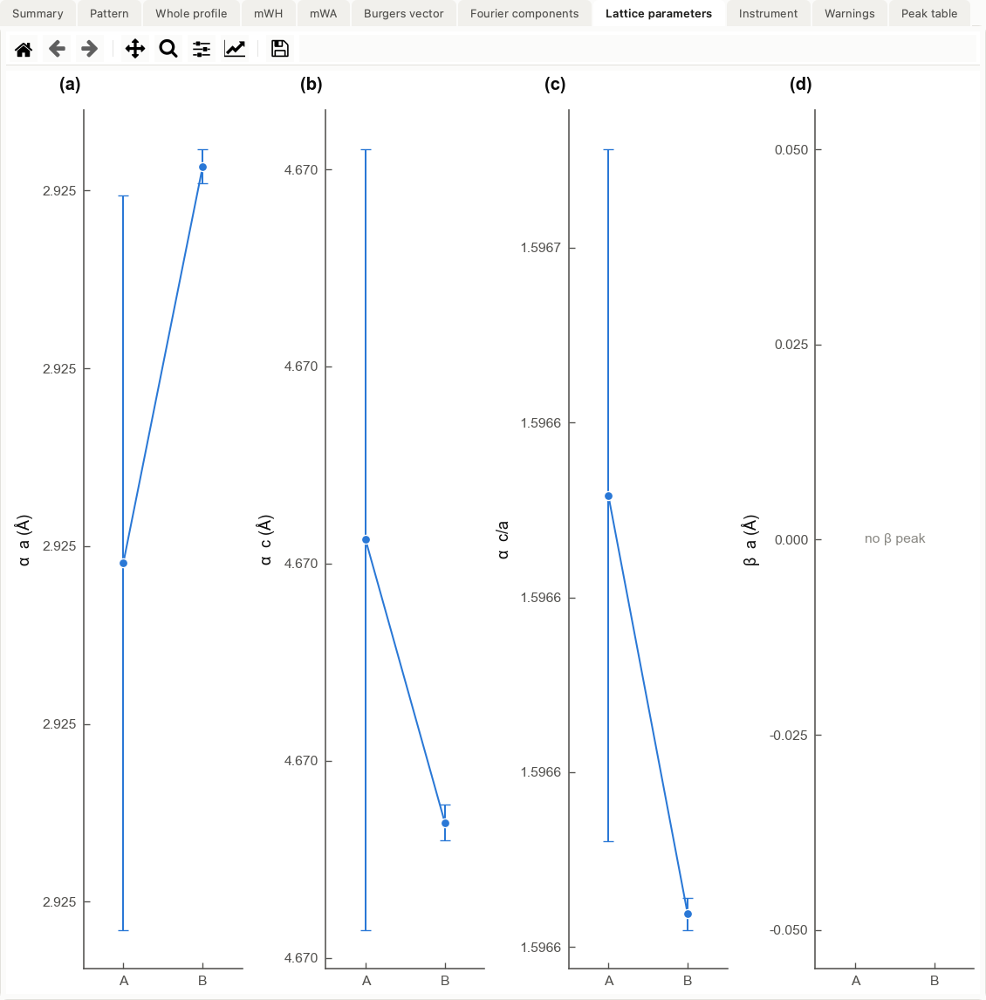
The lattice parameters of the hcp α (α′) phase are calculated from the Kα1 positions of the eight α reflections by Cohen's least-squares method. The method includes a term for the specimen displacement s (the sample surface lying above or below the focusing circle), the main systematic error of Bragg–Brentano measurements; s is reported in the Excel report (typically within ±0.3 mm). The β lattice parameter is computed from every β reflection with a significant intensity (area > 3σ), after the same correction; when no β peak is found the value stays empty. The errors are standard errors of the fit; they do not contain the uncertainty of the wavelength or of a zero-point error of the goniometer.
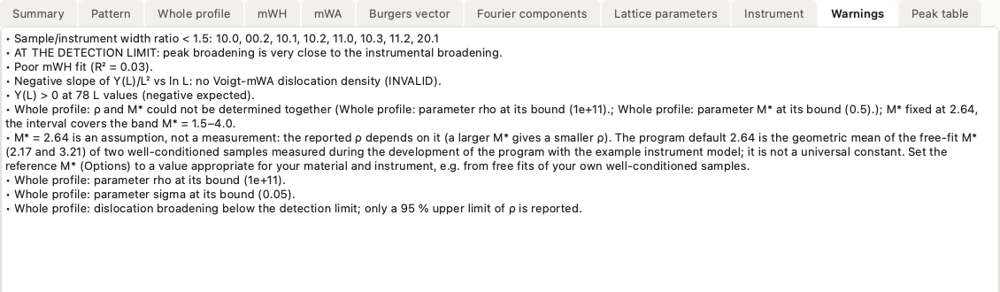
| Warning | Meaning / action |
|---|---|
| Sample/instrument width ratio < 1.5; AT THE DETECTION LIMIT | Peaks hardly broader than the instrument. Report the upper limit; use a better standard or synchrotron data. |
| ρ and M* could not be determined together; M* fixed | Normal for weakly broadened samples. ρ then depends on the assumed M*; the next line of the warning explains the default. Set the reference M* for your material and instrument and mention the assumption when reporting. |
| The intensities are probably not raw counts | The file is in counts per second, normalised or processed. The fit weights and the error intervals assume raw counts; export the raw counts from the diffractometer software if possible. |
| Whole profile χ²/dof > 3 | The model misses part of the profile (second phase, stacking faults, composition differences, texture). Look at the Whole profile tab. |
| Pronounced texture (Harris T outside 0.5–2) | The average contrast factor assumes random orientation; treat h and ρ with care, check with EBSD. |
| Measured q outside the attainable region | Concerns the free mWH only; the constrained mWH and the whole profile are not affected. |
| Negative slope of Y(L)/L² (Voigt-mWA INVALID) | The comparison method failed; the main result is not affected. |
| Component narrower than the instrument (set to zero) | That component cannot be resolved; frequent near the detection limit. |
| Peaks outside the K range of the standard | Measure the standard over the same 2θ range as the samples. |
The Peak table tab lists, for every reflection, the position 2θ, the measured (m) and instrument-corrected (t) Gaussian and Lorentzian widths in degrees and in K units (nm⁻¹), the physical width ΔK, the contrast variable x, b²C̄hkl and the sample/instrument width ratio. The same table is in the Excel report.
Open the tab, press Save this figure… and choose the format in the dialog. On the Summary tab the comparison chart is saved.
| Format | Use |
|---|---|
| PNG 600 dpi | presentations, Word documents |
| TIFF 600 dpi (LZW) | journals that require bitmap files |
| PDF vector | LaTeX documents, journals that accept vector figures |
| SVG vector | further editing in Inkscape or Illustrator |
Figures are drawn at journal column widths (8.5 cm single, 17.5 cm double column) with 7–8 pt Arial text, so they can be inserted at 100 % size.
Export all (paper package)… asks for a folder and writes:
<folder>/
figures/
png/ pdf/ svg/ tif/
00_comparison comparison chart of all samples
00_instrument instrument model
00_lattice_parameters lattice parameters of all samples
<sample>_1_pattern
<sample>_2_whole_profile
<sample>_3_mWH
<sample>_4_mWA
<sample>_5_burgers
<sample>_6_fourier
report.xlsx full report (see the next section)
table_results.csv result table for Excel / Origin
table_results.tex result table for LaTeX
table_lattice.csv / .tex lattice parameters (α a, c, c/a; β a) with errors
The LaTeX table can be included with \input{table_results.tex}; it contains ρ with its 95 % interval, M*, the three h fractions and b²C̄. Upper-limit samples show “< x” and dashes for the undefined parameters.
Output files record only the program name and version (e.g. “AutoDisloc 2.0.0”) in their metadata.
| Sheet | Content |
|---|---|
| Summary | one row per sample: all results (whole profile, Voigt-mWA, mWH, 40-combination method, lattice parameters) |
| Column help | meaning of every important column |
| Warnings | all warnings of all samples |
| n_Peaks | peak table of sample n |
| n_mWA | Y(L) values of the Voigt-mWA |
| n_Burgers | Burgers-vector population with its range over all sub-system mixtures |
| n_WholeProfile | measured, model and difference for every data point (for your own plots) |
| n_Texture | Harris texture indices |
| Measurement and material | format, radiation, Kα2, radius, range and step of every file, what was assumed, the alloy and the nominal lattice used |
| Instrument, Instrument peaks | instrument model (standard, lattice, wavelength, zero shift) and the fitted, indexed standard peaks |
Everything the program does can also be run without the window, for example for many files. In the repository folder:
# instrument model from a line standard python -m autodisloc --lang en instrument STANDARD.raw --standard LaB6 -o instrument.json # analysis of several samples, Excel report and paper package python -m autodisloc --lang en analyze S1.raw S2.raw S3.raw -c instrument.json -o report.xlsx --package paper_package # two-column files measured with Co Kα on a 240 mm goniometer, CP-Ti python -m autodisloc analyze S1.xy -c instrument.json --radiation Co --radius 240 --material CP-Ti
| Option | Meaning |
|---|---|
| --lang tr|en | language of messages and files |
| --ka2 auto|present|stripped | Kα2 state (as in Table 7) |
| --radiation Cu|Co|Fe|Cr|Mo|Ag|λ₁,λ₂[,r] | radiation instead of the file value |
| --radius MM | goniometer radius instead of the file value |
| --standard corundum|LaB6|Si|CeO2|other | (instrument) standard material |
| --std-lattice A[,C] | (instrument) lattice of the standard, Å |
| --material Ti-6Al-4V|CP-Ti, --lattice A,C[,Aβ], --beta auto|yes|no | alloy preset, nominal lattice, β phase |
| --no-refine | keep the nominal lattice (no adjustment to the pattern) |
| --zero | apply the zero shift of the standard to the lattice parameters |
| --mwh constrained|free | mWH mode |
| --fourier voigt|eq13 | A(L) formula of the Voigt-mWA (eq13: Muiruri 2020 Eq. 13, for comparison) |
| --mc N | Monte Carlo draws |
| --no-whole-profile | skip the whole-profile fit (fast) |
| --package FOLDER | also write the paper package |
As a Python library:
from autodisloc import read_pattern, InstrumentModel, analyze, set_language
set_language("en")
inst = InstrumentModel.load("instrument.json")
res = analyze(read_pattern("examples/synthetic_Ti64_A.xy"), inst, "A")
print(res.summary()["rho_text"], res.wp.M_star, res.wp.h)
Example text for the methods section:
Dislocation densities were determined by X-ray line profile analysis with AutoDisloc 2 [citation]. Raw Cu Kα patterns (2θ = 20–90°, step 0.02°) were fitted with the Wilkens dislocation model, a log-normal size distribution and the hexagonal contrast factors of Dragomir and Ungár (2002); the instrumental broadening was obtained from a corundum standard measured with the same optics. 95 % intervals were obtained from the fit covariance or, for weakly broadened samples, from a fixed arrangement parameter M* = [value] (band 1.5–4.0; AutoDisloc convention, M*_CMWP = M*/2.568) and the profile likelihood.
| Problem | Solution |
|---|---|
| macOS: “cannot be opened because the developer cannot be verified” | See Section 2.1 (Privacy & Security › Open Anyway). |
| Windows: SmartScreen blocks the program | More info › Run anyway (Section 2.2). |
| “Load or build an instrument model first.” | Section 5.3. |
| The standard cannot be fitted | Too few peaks: measure the standard over a wider range or with longer counting time. |
| A file is not accepted | Export it from the diffractometer software as XRDML, UXD or two-column text (2θ, counts) with the header lines of Table 3. |
| Warning: “The file contains no wavelength” | Select the radiation (Section 5.5) or add # ANODE = … to the file. If the α-Ti peaks match another anode much better, the warning and the assistant name it (e.g. “Co Kα?”). |
| Warning: “Only n of the m peaks found match …” | Wrong standard material, lattice parameter or radiation; correct it and build the model again. |
| Warning: goniometer radius of sample and standard differ | The sample comes from another diffractometer: build an instrument model from a standard measured on that instrument (Section 5.3). Without it, ρ is not valid. |
| Warning: sample and standard wavelengths differ | Use a standard measured with the same tube and optics as the samples. |
| The analysis takes very long | Normal at the detection limit; set Monte Carlo to 0 or switch off the whole profile for a preview. |
| Very large χ²/dof (> 10) | Check the Kα2 option and that the file is not background-subtracted or smoothed. |
| Figures look small on screen | They keep journal proportions; enlarge the window or use the zoom tool. Exported files are unaffected. |
| Error message after Run analysis | Copy the message and report it with the data file to the author. |
AutoDisloc is free software under the MIT licence. If you use it in scientific work, please cite it as given in CITATION.cff of the repository (GitHub: Cite this repository; Zenodo DOI of the release). The method is described in the whitepaper. Author: Fırat Memu.
Scientific basis and development. The calculation method of AutoDisloc (modified Williamson–Hall, modified Warren–Averbach and Burgers-vector population analysis) is based on the dislocation-density measurement method of the author's doctoral thesis: F. Memu, Eklemeli imalat yöntemi ile üretilmiş Ti-6Al-4V alaşımının yüksek gerinme hızlarındaki davranışının deneysel ve sayısal yöntemler ile incelenmesi (Experimental and numerical investigation of the high-strain-rate behaviour of Ti-6Al-4V produced by additive manufacturing), PhD thesis, TOBB University of Economics and Technology, Graduate School of Natural and Applied Sciences, Department of Mechanical Engineering, Ankara, 2025 (supervisor: Prof. Dr. Nuri Durlu). The conversion and extension of this method into Python code (including the Wilkens whole-profile fit), the graphical user interface (GUI), the reports and exports, the packaging, the tests and the documentation (this manual and the whitepaper) were developed with the assistance of the AI model Claude Opus 5.5 (Anthropic) under the direction and review of the author. The scientific evaluation of the results and the responsibility for them rest with the author.
Third-party components. AutoDisloc uses NumPy, SciPy, pandas, matplotlib, openpyxl and Pillow, and Qt through Qt for Python (PySide6) under the GNU LGPLv3 (Qt: Copyright © The Qt Company Ltd. and other contributors). The ready-made applications contain these components; their licence texts, copies of the GNU GPL and LGPL and the Qt source-code information are opened with About › Third-party licences and are listed in THIRD-PARTY-NOTICES.md of the repository.